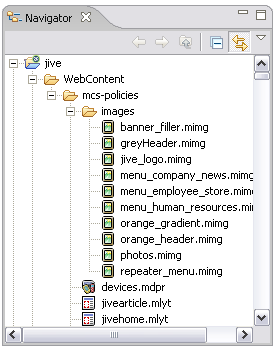

At design time, you develop MCS policies in the Eclipse workbench, by creating one or more projects, and using the MCS policy editors to specify component, variant, layout, theme and device information. For runtime deployment, policies are often imported to a database repository.
If you are new to Eclipse, you should read about using the workbench features in the Workbench user guide. This overview explains how the MCS design-time features fit into the workbench environment.
A perspective is a group of one or more views and editors in the workbench. When you open the MCS perspective, Eclipse initially displays the set of features you are most likely to need for policy development. There are editors for each policy type, and several views.
You can modify the layout of a perspective at any time, and Eclipse will save the current set up. For hints on alternative ways to arrange the MCS perspective, refer to Using the MCS perspective.
Projects are the largest structural unit used in the workbench, and are displayed in the Navigator view. An MCS project is the root directory that contains the related policies.
Projects contain nested folders and files. Individual policies are contained in XML files that MCS creates and edits in the background as you work with the policy editors. Each policy type has a distinctive icon and file extension.

When you create a new MCS project, the New Policy wizard prompts you to define a policy source directory. By default MCS adds a folder to the project named 'WebContent', and another under it named 'mcs-policies'.
Alternatively, you can arrange your development structure to suit any standards or guidelines used in your organization. For example, you might create projects with a different folder structure, or in folders under other Eclipse projects. However, MCS policies files must always be created within a folder.
Unless you have specific reasons to work otherwise, you should consider using the default MCS structure for each project. It is also useful to sub-divide large or unrelated units of work into separate projects or additional sub-folders. When you import the XML policies to a database, you can control which policies or sets of policies are deployed, or deploy a whole repository using parameters. The structure of your folders and their underlying physical directories can therefore influence the choice of import parameters and how the tables in the database repository are updated.
Related topics
Developing MCS policies
Using the MCS perspective
MCS policy editors
MCS views